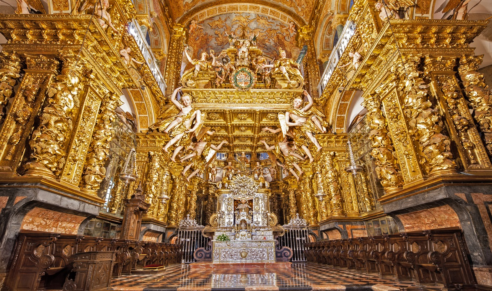
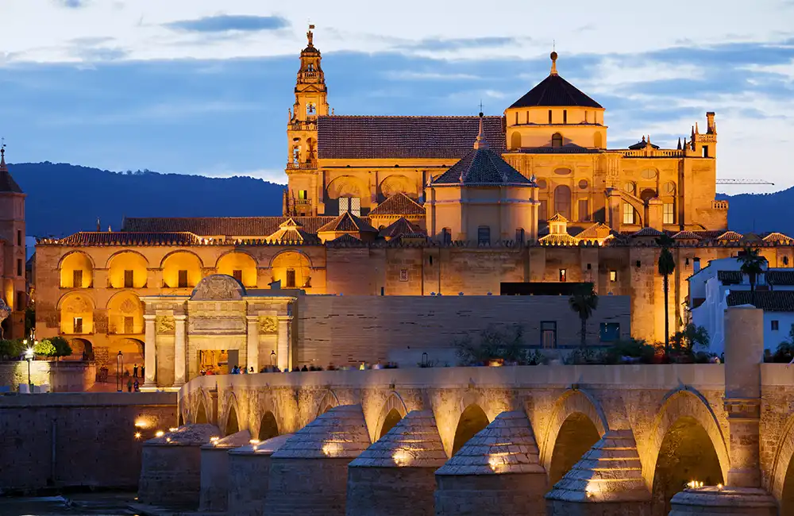

Discover Spain's Religious Heritage
A journey through centuries of faith, culture, and tradition

A journey through centuries of faith, culture, and tradition
Early Christian communities established the foundation of Spanish Christianity
Nearly 800 years of Islamic rule brought architectural marvels and cultural exchange
The Catholic Monarchs unified Spain under Christianity

Barcelona
Gaudí's masterpiece, a symbol of Catalan Modernism and Catholic devotion


Holy Week processions feature elaborate floats (pasos) carried through streets, accompanied by penitents in traditional robes.
The Way of St. James pilgrimage attracts thousands who walk ancient routes to Santiago Cathedral, singing traditional pilgrimage songs.
In cities with Islamic heritage like Córdoba, Ramadan is celebrated with special night prayers in historic mosques.
Experience the medieval chants from Spanish monasteries
Traditional Islamic prayers from Córdoba's historic mosque
Traditional songs sung along the Camino de Santiago